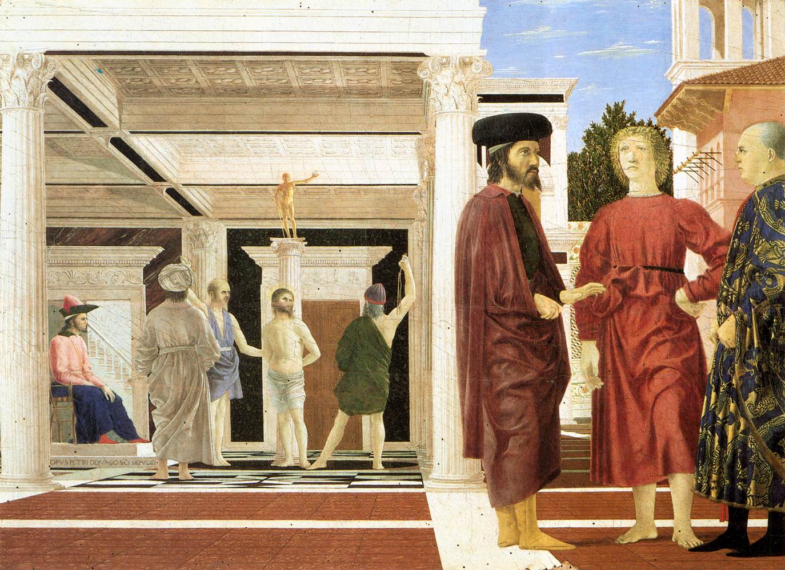

De la Flagellation à l’Ecce Homo

Pourquoi l’homme assis tout à gauche est-il si important ? Il représente Ponce Pilate, le gouverneur romain devant lequel Jésus comparaît. L’accusation de se présenter comme « roi des Juifs » donne à l’interrogatoire une portée politique. Dans l’Évangile selon Jean, la question de la royauté mène Pilate à demander à Jésus ce qu’est la vérité.
Les quatre Évangiles situent différemment le châtiment. Chez Matthieu et Marc, Pilate fait flageller Jésus avant de le livrer pour qu’il soit crucifié. Luc rapporte que Pilate propose de le faire châtier puis de le relâcher, sans raconter l’exécution du châtiment. Chez Jean, la flagellation intervient pendant que Pilate cherche encore à faire relâcher Jésus. Les soldats tournent sa royauté en dérision avec une couronne d’épines et un manteau de pourpre. Pilate le présente ensuite à la foule en disant « Voici l’homme », Ecce Homo en latin. Cette formule a donné son nom à un autre sujet de la peinture chrétienne, celui du Christ ainsi présenté après le supplice.
Revenez au jeune homme blond et pieds nus, au centre du trio. Une hypothèse liée à l’histoire d’Urbino l’identifie à Oddantonio da Montefeltro, assassiné en 1444. Une autre famille d’interprétations rapproche le tableau de la prise de Constantinople en 1453 et lit le supplice comme une image des souffrances de la chrétienté orientale. Ces lectures éclairent la place inhabituelle des trois hommes de façons différentes. Leur identité reste ouverte.
Matthieu 27 · Marc 15 · Luc 23 · Jean 18 et Jean 19 ·